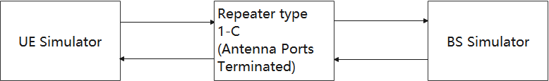
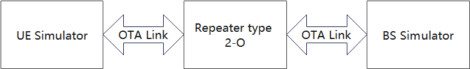
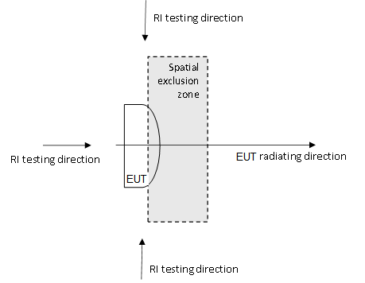

3GPP TS 38.114 V17.7.0 (2024-12)
Technical Specification
3rd Generation Partnership Project;
Technical Specification Group Radio Access Network;
NR;
Repeaters ElectroMagnetic Compatibility (EMC)
(Release 17)
The present document has been developed within the 3rd Generation
Partnership Project (3GPP TM) and may be further elaborated
for the purposes of 3GPP..
The present document has not been subject to any approval process by the
3GPP Organizational Partners and shall not be implemented.
This Specification is provided for future development work within 3GPP
only. The Organizational Partners accept no liability for any use of
this Specification.
Specifications and Reports for implementation of the 3GPP TM
system should be obtained via the 3GPP Organizational Partners'
Publications Offices.
Keywords
<>
3GPP
Postal address
3GPP support office address
650 Route des Lucioles - Sophia Antipolis
Valbonne - FRANCE
Tel.: +33 4 92 94 42 00 Fax: +33 4 93 65 47 16
Internet
http://www.3gpp.org
Copyright Notification
No part may be reproduced except as authorized by written
permission.
The copyright and the foregoing restriction extend to reproduction in
all media.
© 2024, 3GPP Organizational Partners (ARIB, ATIS, CCSA, ETSI, TSDSI, TTA, TTC).
All rights reserved.
UMTS™ is a Trade Mark of ETSI registered for the benefit of its members
3GPP™ is a Trade Mark of ETSI registered for the benefit of its
Members and of the 3GPP Organizational Partners
LTE™ is a Trade Mark of ETSI registered for the benefit of its Members
and of the 3GPP Organizational Partners
GSM® and the GSM logo are registered and owned by the GSM Association
Contents
Foreword 5
1 Scope 7
2 References 7
3 Definitions, symbols and abbreviations 9
3.1 Definitions 9
3.2 Symbols 10
3.3 Abbreviations 10
4 Test conditions 11
4.1 General 11
4.2 Arrangements for establishing a communication link 11
4.3 Narrow band responses 11
4.4 Exclusion bands 12
4.5 RF repeaters test configurations 12
5 Performance assessment 13
5.1 General 13
5.2 RF repeaters 14
5.3 Ancillary equipment 14
6 Performance criteria 14
6.1 Performance criteria for continuous phenomena for RF repeaters 14
6.2 Performance criteria for transient phenomena for RF repeaters 14
6.3 Performance criteria for continuous phenomena for Ancillary equipment 14
6.4 Performance criteria for transient phenomena for Ancillary equipment 15
7 Applicability overview 15
7.1 Emission 15
7.2 Immunity 16
8 Emission 16
8.1 Test configurations 16
8.2 Radiated emission 17
8.2.1 Radiated emission, Repeater 17
8.2.1.1 Definition 17
8.2.1.2 Test method 17
8.2.1.3 Limits 18
8.2.1.4 Interpretation of the measurement results 18
8.2.2 Radiated emission, ancillary equipment 19
8.2.2.1 Definition 19
8.2.2.2 Test method 19
8.2.2.3 Limits 19
8.3 Conducted emission DC power input/output port 20
8.3.1 Definition 20
8.3.2 Test method 20
8.3.3 Limits 20
8.4 Conducted emissions, AC mains power input/output port 20
8.4.1 Definition 20
8.4.2 Test method 20
8.4.3 Limits 20
8.5 Conducted emissions, telecommunication port 21
8.5.1 Definition 21
8.5.2 Test method 21
8.5.3 Limits 21
8.6 Harmonic Current emissions (AC mains input port) 21
8.7 Voltage fluctuations and flicker (AC mains input port) 21
9 Immunity 21
9.1 Test configurations 21
9.2 RF electromagnetic field (80 MHz - 6000 MHz) 22
9.2.1 Definition 23
9.2.2 Test method and level 23
9.2.3 Performance criteria 24
9.3 Electrostatic discharge 24
9.3.1 Definition 24
9.3.2 Test method and level 24
9.3.3 Performance criteria 24
9.4 Fast transients common mode 24
9.4.1 Definition 24
9.4.2 Test method and level 24
9.4.3 Performance criteria 25
9.5 RF common mode (0.15 MHz - 80 MHz) 25
9.5.1 Definition 25
9.5.2 Test method and level 25
9.5.3 Performance criteria 25
9.6 Voltage dips and interruptions 26
9.6.1 Definition 26
9.6.2 Test method and level 26
9.6.3 Performance criteria 26
9.7 Surges, common and differential mode 26
9.7.1 Definition 27
9.7.2 Test method and level 27
9.7.2.1 Test method for telecommunication ports directly connected to outdoor cables 27
9.7.2.2 Test method for telecommunication ports connected to indoor cables 27
9.7.2.3 Test method for AC power ports 27
9.7.3 Performance criteria 27
Annex A (informative): Change history 28
This Technical Specification has been produced by the 3rd Generation Partnership Project (3GPP).
The contents of the present document are subject to continuing work within the TSG and may change following formal TSG approval. Should the TSG modify the contents of the present document, it will be re-released by the TSG with an identifying change of release date and an increase in version number as follows:
Version x.y.z
where:
x the first digit:
1 presented to TSG for information;
2 presented to TSG for approval;
3 or greater indicates TSG approved document under change control.
y the second digit is incremented for all changes of substance, i.e. technical enhancements, corrections, updates, etc.
z the third digit is incremented when editorial only changes have been incorporated in the document.
In the present document, modal verbs have the following meanings:
shall indicates a mandatory requirement to do something
shall not indicates an interdiction (prohibition) to do something
The constructions "shall" and "shall not" are confined to the context of normative provisions, and do not appear in Technical Reports.
The constructions "must" and "must not" are not used as substitutes for "shall" and "shall not". Their use is avoided insofar as possible, and they are not used in a normative context except in a direct citation from an external, referenced, non-3GPP document, or so as to maintain continuity of style when extending or modifying the provisions of such a referenced document.
should indicates a recommendation to do something
should not indicates a recommendation not to do something
may indicates permission to do something
need not indicates permission not to do something
The construction "may not" is ambiguous and is not used in normative elements. The unambiguous constructions "might not" or "shall not" are used instead, depending upon the meaning intended.
can indicates that something is possible
cannot indicates that something is impossible
The constructions "can" and "cannot" are not substitutes for "may" and "need not".
will indicates that something is certain or expected to happen as a result of action taken by an agency the behaviour of which is outside the scope of the present document
will not indicates that something is certain or expected not to happen as a result of action taken by an agency the behaviour of which is outside the scope of the present document
might indicates a likelihood that something will happen as a result of action taken by some agency the behaviour of which is outside the scope of the present document
might not indicates a likelihood that something will not happen as a result of action taken by some agency the behaviour of which is outside the scope of the present document
In addition:
is (or any other verb in the indicative mood) indicates a statement of fact
is not (or any other negative verb in the indicative mood) indicates a statement of fact
The constructions "is" and "is not" do not indicate requirements.
The present document covers the assessment of repeater and ancillary equipment in respect of Electromagnetic Compatibility (EMC).
The present document specifies the applicable requirements, procedures, test conditions, performance assessment and performance criteria for repeater and associated ancillary equipment in the following categories:
- Repeater equipped with antenna connectors which are possible to be terminated during EMC testing, meeting the RF repeater type 1-C RF requirements of TS 38.106 [2], with conformance demonstrated by compliance to TS 38.115-1 [3].
- Repeater not equipped with antenna connectors, i.e. with antenna elements radiating during the EMC testing, meeting the RF repeater type 2-O RF requirements of TS 38.106 [2], with conformance demonstrated by compliance to TS 38.115-2 [4].
The environment classification used in the present document refers to the residential, commercial and light industrial environment classification used in IEC 61000‑6-1 [6], IEC 61000-6-3 [7] and IEC 61000-6-8 [24].
The EMC requirements have been selected to ensure an adequate level of compatibility for apparatus at residential, commercial and light industrial environments. The levels, however, do not cover extreme cases which may occur in any location but with low probability of occurrence.
The following documents contain provisions which, through reference in this text, constitute provisions of the present document.
- References are either specific (identified by date of publication, edition number, version number, etc.) or non‑specific.
- For a specific reference, subsequent revisions do not apply.
- For a non-specific reference, the latest version applies. In the case of a reference to a 3GPP document (including a GSM document), a non-specific reference implicitly refers to the latest version of that document in the same Release as the present document.
[1] 3GPP TR 21.905: "Vocabulary for 3GPP Specifications"
[2] 3GPP TS 38.106: "NR Repeater Radio Transmission and Reception"
[3] 3GPP TS 38.115-1: "NR; Repeater conformance testing - Part 1: Conducted conformance testing"
[4] 3GPP TS 38.115-2: "NR; Repeater conformance testing - Part 1: Radiated conformance testing"
[5] CISPR 32: "Electromagnetic compatibility of multimedia equipment - Emission requirements".
[6] IEC 61000‑6-1: "Electromagnetic compatibility (EMC) - Part 6-1: Generic standards - Immunity for residential, commercial and light-industrial environments".
[7] IEC 61000-6-3: "Electromagnetic compatibility (EMC) - Part 6-3: Generic standards - Emission standard for equipment in residential environments".
[8] IEC 61000-3-2: "Electromagnetic compatibility (EMC) - Part 3-2: Limits - Limits for harmonic current emissions (equipment input current ≤ 16 A per phase)".
[9] IEC 61000-3-3: "Electromagnetic compatibility (EMC) - Part 3-3: Limits - Limitation of voltage changes, voltage fluctuations and flicker in low-voltage supply systems, for equipment with rated current ≤ 16 A per phase and not subject to conditional connection".
[10] IEC 61000-3-11: "Electromagnetic compatibility (EMC) - Part 3-11: Limits – Limitation of voltage changes, voltage fluctuations and flicker in low-voltage supply systems - Equipment with rated current ≤ 75 A and subject to conditional connections".
[11] IEC 61000-3-12: "Electromagnetic compatibility (EMC) - Part 3-12: Limits - Limits for harmonic currents produced by equipment connected to public low-voltage system with input current >16 A and ≤ 75 A per phase".
[12] IEC 61000‑4‑2: "Electromagnetic compatibility (EMC) - Part 4-2: Testing and measurement techniques - Electrostatic discharge immunity test".
[13] IEC 61000‑4‑3:2006+AMD1:2007+AMD2:2010 CSV: "Electromagnetic compatibility (EMC) - Part 4-3: Testing and measurement techniques - Radiated, radio-frequency, electromagnetic field immunity test".
[14] IEC 61000‑4‑4: "Electromagnetic compatibility (EMC) - Part 4-4: Testing and measurement techniques - Electrical fast transient/burst immunity test".
[15] IEC 61000‑4‑5: "Electromagnetic compatibility (EMC) - Part 4-5: Testing and measurement techniques - Surge immunity test".
[16] IEC 61000‑4‑6: "Electromagnetic compatibility (EMC) - Part 4-6: Testing and measurement techniques - Immunity to conducted disturbances, induced by radio frequency fields".
[17] IEC 61000‑4‑11: "Electromagnetic compatibility (EMC) - Part 4-11: Testing and measurement techniques - Voltage dips, short interruptions and voltage variations immunity tests".
[18] IEC 61000‑4‑21: "Electromagnetic compatibility (EMC) - Part 4-21: Testing and measurement techniques - Reverberation chamber test methods".
[19] ITU-R SM.329: "Unwanted emissions in the spurious domain".
[20] IEC 60050-161: "International Electrotechnical Vocabulary - Chapter 161: Electromagnetic compatibility".
[21] ETSI EN 301 489-1: "Electromagnetic Compatibility (EMC) standard for radio equipment and services - Part 1: Common technical requirements - Harmonised Standard for Electromagnetic Compatibility ".
[22] ETSI EN 301 489-50: "Electromagnetic compatibility (EMC) standard for radio equipment and services; Part 50: Specific conditions for cellular communication base station (BS), repeater and ancillary equipment; Harmonised standard covering the essential requirements of article 3.1(b) of the Directive 2014/53/EU".
[23] 3GPP TS 38.101-4: "NR; User Equipment (UE) radio transmission and reception; Part 4: Performance requirements".
[24] IEC 61000-6-8:"Electromagnetic compatibility (EMC) - Part 6-8: Generic standards - Emission standard for professional equipment in commercial and light-industrial locations".
[25] CISPR 16-1-4:"Specification for radio disturbance and immunity measuring apparatus and methods - Part 1-4: Radio disturbance and immunity measuring apparatus - Antennas and test sites for radiated disturbance measurements".
[26] ITU-R SM.1539-1:"Variation of the boundary between the out-of-band and spurious domains required for the application of Recommendations ITU-R SM.1541 and ITU-R SM.329 ".
[27] CISPR 16-4-2 :"Specification for radio disturbance and immunity measuring apparatus and methods - Part 4-2: Uncertainties, statistics and limit modelling - Measurement instrumentation uncertainty".
[28] ETSI TR 100 028-1:"Electromagnetic Compatibility and Radio Spectrum Matters (ERM); Uncertainties in the Measurement of Mobile Radio Equipment Characteristics; Part 1".
For the purposes of the present document, the terms and definitions given in TR 21.905 [1] and the following apply. A term defined in the present document takes precedence over the definition of the same term, if any, in TR 21.905 [1].
ancillary equipment: electrical or electronic equipment, that is intended to be used with a receiver or transmitter
NOTE: It is considered as an ancillary equipment if:
the equipment is intended for use with a receiver or transmitter to provide additional operational and/or control features to the radio equipment, (e.g. to extend control to another position or location); and
the equipment cannot be used on a stand alone basis to provide user functions independently of a receiver or transmitter; and
the receiver or transmitter, to which it is connected, is capable of providing some intended operation such as transmitting and/or receiving without the ancillary equipment (i.e. it is not a sub-unit of the main equipment essential to the main equipment basic functions).
antenna port: for EMC purposes, port for connection of an antenna used for intentional transmission and/or reception of radiated RF energy, equivalent to an RF antenna connector.
channel bandwidth: the RF bandwidth supporting a single NR RF carrier with the transmission bandwidth configured in the uplink or downlink of a cell. The channel bandwidth is measured in MHz and is used as a reference for transmitter and receiver RF requirements.
continuous phenomena: electromagnetic disturbance, the effects of which on a particular device or equipment cannot be resolved into a succession of distinct effects (IEC 60050-161 [20]).
exclusion band: frequency range(s) not subject to test or assessment.
multi-band repeater: Repeater Type 1-C whose antenna connector is associated with a transmitter and/or receiver that is characterized by the ability to process two or more passband(s) in common active RF components simultaneously, where at least one passband is configured at a different operating band than the other passband(s) and where this different operating band is not a sub-band or superseding-band of another supported operating band
operating band: frequency range in which NR operates (paired or unpaired), that is defined with a specific set of technical requirements.
passband edge: Frequency at the edge of the passband
port: A particular interface, of the specified equipment (apparatus), with the electromagnetic environment. For example, any connection point on an equipment intended for connection of cables to or from that equipment is considered as a port (see Figure 3.1-1).
Figure 3.1-1: Examples of ports
RF repeater type 1-C: Repeater operating at FR1 with a requirement set consisting only of conducted requirements defined at individual antenna connectors.
RF repeater type 2-O: Repeater operating at FR2 with a requirement set consisting only of OTA requirements defined at the RIB
radiated interface boundary: operating band specific radiated requirements reference where the radiated requirements apply
signal/control port: port intended for the interconnection of components of an EUT, or between an EUT and associated equipment and used in accordance with relevant functional specifications (for example for the maximum length of cable connected to it).
single-band connector: Repeater type 1-C antenna connector supporting operation either in a single operating band only, or in multiple operating bands but does not meet the conditions for a multi-band connector
spatial exclusion zone: range of angles where no tests of radiated immunity are made for repeater type 2-O (i.e. half sphere around the EUT's radiating direction).
single-band connector: RF repeater type 1-C antenna connector supporting operation either in a single operating band only, or in multiple operating bands but does not meet the conditions for a multi-band connector
spatial exclusion zone: range of angles where no tests of radiated immunity are made for RF repeater type 2-O (i.e. half sphere around the EUT's radiating direction).
telecommunication port: ports which are intended to be connected to telecommunication networks (e.g. public switched telecommunication networks, integrated services digital networks), local area networks (e.g. Ethernet, Token Ring) and similar networks.
NOTE: Telecommunication port is called "wired network port" in CISPR 32 [5] and ETSI EN 301 489-1 [21].
transient phenomena: pertaining to or designating a phenomena or a quantity which varies between two consecutive steady states during a time interval short compared with the time-scale of interest (IEC 60050-161 [20]).
For the purposes of the present document, the following symbols apply:
BWChannel Channel bandwidth
Prated,p,AC Rated passband output power per antenna connector
Prated,p,TRP Rated passband TRP output power declared per RIB
Pmax,p,AC Maximum passband output power measured per antenna connector
Pmax,p,TRP Maximum passband TRP output power measured per RIB
For the purposes of the present document, the abbreviations given in TR 21.905 [1] and the following apply. An abbreviation defined in the present document takes precedence over the definition of the same abbreviation, if any, in TR 21.905 [1].
AC Alternating Current
AMN Artificial Mains Network
CDN Coupling/Decoupling Network
DC Direct Current
EMC Electromagnetic Compatibility
EUT Equipment Under Test
FR Frequency Range
NR New Radio
RF Radio Frequency
rms root mean square
Requirements throughout the EMC specifications are in some cases defined separately for different frequency ranges (FR). The frequency ranges FR1 and FR2 are defined in clause 5.1 of TS 38.106 [2]. RF repeater is designed to operate in FR1 and FR2-1.
The equipment shall be tested in normal test environment defined in the corresponding RF repeater conformance testing specification TS 38.115-1 [3] for RF repeater type 1-C or TS 38.115-2 [4] for RF repeater type 2-O. The test conditions shall be recorded in the test report.
For Repeater capable of multi-band operation, the requirements in the present document apply for each supported operating band unless otherwise stated. Operating bands shall be activated according to the test configuration in clause 4.5. Tests shall be performed relating to each type of port and all operating bands shall be assessed during the tests.
The manufacturer shall declare the supported operating band(s) according to the list of RF repeater operating bands defined in TS 38.106 [2].
NOTE 1: NR operating bands for RF repeater type 1-C, are declared by the manufacturer according to the declaration D.2 specified in TS 38.115-1 [3], table 4.6-1.
NOTE 2: NR operating bands for RF repeater type 2-O, are declared by the manufacturer according to the declaration D.4 specified in TS 38.115-2 [4], table 4.6-1.
The wanted RF input signal nominal frequency shall be selected by setting the NR Absolute Radio Frequency Channel Number (NR-ARFCN) to an appropriate number, as defined in TS 38.106 [2], clause 5.3.1.2.
A communication link shall be set up with a suitable test system capable of evaluating the required performance criteria (hereafter called "the test system") at the radio interface and telecommunication port(s) (the BS interface). The test system shall be located outside of the test environment.
When the EUT is required to be in the uplink/downlink operation, the following conditions shall be met:
- For the RF repeater type 1-C , the EUT shall be commanded to operate at maximum rated output power;
- For the RF repeater type 2-O testing, the EUT output power shall be configured as stated in clause 8.1 for emission test and clause 9.1 for immunity test accordingly;
- Adequate measures shall be taken to avoid the effect of the unwanted signal on the measuring equipment;
For immunity tests clause 4.3 shall apply and the conditions shall be as follows.
Responses on uplink or downlink occurring during the immunity test at discrete frequencies which are narrow band responses (spurious responses), are identified by the following method:
- if during an immunity test the quantity being monitored goes outside the specified tolerances (clause 6), it is necessary to establish whether the deviation is due to a narrow band response or to a wide band (EMC) phenomenon. Therefore, the test shall be repeated with the unwanted signal frequency increased, and then decreased by 2 x BWChannel MHz, where BWChannel is the channel bandwidth as defined in TS 38.106 [2], clause 5.3;
- if the deviation disappears in either one or both of the above MHz offset cases, then the response is considered as a narrow band response;
- if the deviation does not disappear, this may be due to the fact that the offset has made the frequency of the unwanted signal correspond to the frequency of another narrow band response. Under these circumstances the procedure is repeated with the increase and decrease of the frequency of the unwanted signal set to 2.5 x BWChannel MHz;
- if the deviation does not disappear with the increased and/or decreased frequency, the phenomenon is considered wide band and therefore an EMC problem and the equipment fails the test.
For immunity test narrow band responses are disregarded.
For EUT capable of multi-band operation, all supported operating bands shall be considered for narrowband responses.
The exclusion band for RF repeater is the frequency range over which no tests of radiated immunity are made in UL or DL.
The exclusion band for DL is defined as:
FDL,low – ΔfOBUE < f < FDL,high + ΔfOBUE
Where values of FDL,low and FDL,high are defined for each operating band in TS 38.106 [2], clause 5.2.
The exclusion band for UL is defined as:
FUL,low – ΔfOBUE < f < FUL,high + ΔfOBUE
Where values of FUL,low and FUL,high are defined for each operating band in TS 38.106 [2], clause 5.2.
For RF repeater capable of multi-band operation, the total exclusion band is a combination of the exclusion bands for each operating band supported by RF repeater.
The ΔfOBUE values for RF repeater type 1-C is defined in table 4.4-1 for both DL and UL.
Table 4.4-1: ΔfOBUE offset values for RF repeater 1-C
| Repeater type | Operating band characteristics | Repeater type |
|---|---|---|
| RF repeater type 1-C | FUL,high – FUL,low < 200 MHz, or FDL,high – FDL,low < 200 MHz |
10 |
200 MHz ≤ FUL,high – FUL,low ≤ 900 MHz 200 MHz ≤ FDL,high – FDL,low ≤ 900 MHz |
40 |
NOTE: As the radiated immunity testing is defined in the frequency range 80 MHz to 6 GHz, there is no exclusion band defined for RF repeater type 2-O.
The present clause defines the RF repeaters test configurations that shall be used for demonstrating conformance. A single RF repeater carrier shall be used for testing of single-carrier capable RF repeaters.
The signal's channel bandwidth and subcarrier spacing used to build NR Test Configurations shall be selected according to table 4.7.2-1 in TS 38.115-1 [3] clause 4.7 for RF repeaters type 1-C, and table 4.7.2.1-1 in TS 38.115-2 [4] clause 4.7 for RF repeaters type 2-O. The passband frequency range declared per operating band in TS 38.115-1 [3] clause 4.6, and TS 38.115-2 [4] clause 4.6 shall be used.
For other RF repeaters, the test configurations in table 4.5-1 and table 4.5-2 shall be used. The RF repeaters test configurations (RTCx) are defined in TS 38.115-1 [3], clause 4.7 for RF repeaters type 1-C and in TS 38.115-2 [4], clause 4.7 for RF repeaters type 2-O.
Table 4.5-1: Test configurations for RF repeaters type 1-C
| Repeater test case | Repeater capable of single or multiple passbands in a single band | Repeater capable of multi-band operation | |||
|---|---|---|---|---|---|
| Single passband repeater | Multiple passband capable repeater with identical parameters per passband | Multiple passband capable repeater with different parameters per passband | Common connector | Separate connectors | |
| Emission tests | RTC1 | RTC1, RTC2 | RTC1, RTC2 | RTC1/2 (Note 1), RTC4 | RTC1/2 (Note 1, 2), RTC4 (Note 2) |
| Immunity tests | RTC1 | RTC1, RTC2 | RTC1, RTC2 | RTC1/2 (Note 1), RTC4 | RTC1/2 (Note 1, 2), RTC4 (Note 2) |
NOTE 1: RTC1 and/or RTC2 shall be applied in each supported operating band. NOTE 2: For single-band operation test, other antenna connector(s) is (are) terminated. |
|||||
Table 4.5-2: Test configurations for RF repeaters type 2-O
| Repeater test case | Repeater capable of single or multiple passbands in a single band | ||
|---|---|---|---|
| Single passband repeater | Multiple passband capable repeater with identical parameters per passband | Multiple passband capable repeater with different parameters per passband | |
| Emission tests | RTC1 | RTC1, RTC2 | RTC1, RTC2 |
| Immunity tests | RTC1 | RTC1, RTC2 | RTC1, RTC2 |
The following information shall be recorded in or annexed to the test report:
- The primary functions of the radio equipment to be tested during and after the EMC testing;
- The intended functions of the radio equipment which shall be in accordance with the documentation accompanying the equipment;
- The method to be used to verify that a communications link is established and maintained;
- The user-control functions and stored data that are required for normal operation and the method to be used to assess whether these have been lost after EMC stress;
- The ancillary equipment to be combined with the radio equipment for testing (where applicable);
- The information about ancillary equipment intended to be used with the radio equipment;
- Information about the common and/or band-specific active RF components and other hardware blocks for a communication link in EUT capable of multi-band operation;
- An exhaustive list of ports (or RIBs), classified as either power or signal/control. Power ports shall further be classified as AC or DC power.
Performance assessment of a RF repeater with multiple enclosures may be done separately, according to the manufacturer's choice.
A communication link used by more than one operating band, shall be assessed on all operating bands. Communication link(s) and/or radio performance parameters for the operating bands can during the test be assessed simultaneously or separately for each band, depending on the test environment capability.
The parameter used for assessment of performance of a RF repeater is the power accuracy within the operating band.
At the manufacturer's discretion the test may be performed on the ancillary equipment separately or on a representative configuration of the combination of radio and ancillary equipment. In each case EUT is tested against all applicable immunity and emission clauses of the present document and in each case, compliance enables the ancillary equipment to be used with different radio equipment.
The power accuracy of the EUT shall be measured throughout the period of exposure of the phenomenon.
For RF repeater type 1-C, the measured output power Pmax,p,AC during the test shall not change from the rated passband output power Prated,p,AC measured before the test by more than ± 1 dB.
For RF repeater type 2-O, the maximum passband TRP output power Pmax,p,TRP during the test shall not change from the rated passband TRP output power Prated,p,TRP measured before the test by more than ± 1 dB.
At the conclusion of the test the EUT shall operate as intended with no loss of user control functions or stored data.
The power accuracy of the EUT shall be measured before the test and after each exposure.
For RF repeater type 1-C, the measured output power Pmax,p,AC after each exposure and after the total test shall not change from the rated passband output power Prated,p,AC measured before the test by more than ± 1 dB.
For RF repeater type 2-O, the maximum passband TRP output power Pmax,p,TRP after each exposure and after the total test shall not change from the rated passband TRP output power Prated,p,TRP measured before the test by more than ± 1 dB.
At the conclusion of the total test comprising the series of individual exposures, the EUT shall operate as intended with no loss of user control functions or stored data.
The apparatus shall continue to operate as intended during and after the test. No degradation of performance or loss of function is allowed below the performance level specified by the manufacturer, when the apparatus is used as intended. The performance level may be replaced by a permissible performance loss. If the minimum performance level or the permissible performance loss is not specified by the manufacturer, either of these may be derived from the product description and documentation and what the user may reasonably expect from the apparatus if used as intended.
The apparatus shall continue to operate as intended after the test. No degradation of performance or loss of function is allowed below the performance level specified by the manufacturer, when the apparatus is used as intended. The performance level may be replaced by a permissible performance loss. During the test, degradation of performance is however allowed. If the minimum performance level or the permissible performance loss is not specified by the manufacturer, either of these may be derived from the product description and documentation and what the user may reasonably expect from the apparatus if used as intended.
Table 7.1-1: Emission requirements applicability
| Phenomenon | Application | Equipment test requirement | Reference clause in the |
Reference standard |
|
|---|---|---|---|---|---|
| RF repeater equipment | Ancillary equipment | present document | |||
| Radiated emission | Enclosure | applicable for RF repeater type 1-C (Note 1) |
not applicable | 8.2.1 | ITU-R SM.329 [19] |
| Radiated emission | Enclosure of ancillary equipment | not applicable | applicable | 8.2.2 | CISPR 32 [5] |
| Conducted emission | DC power input/output port | applicable | applicable | 8.3 | CISPR 32 [5] |
| Conducted emission | AC mains input/output port | applicable | applicable | 8.4 | CISPR 32 [5] |
| Conducted emission | Telecommunication port | applicable | applicable | 8.5 | CISPR 32 [5] |
| Harmonic current emissions | AC mains input port | applicable | applicable | 8.6 | IEC 61000-3-2 [8] or (NOTE 2) |
| Voltage fluctuations and flicker | AC mains input port | applicable | applicable | 8.7 | IEC 61000-3-3 [9] or (NOTE 2) |
NOTE 1: Radiated emission requirements for RF repeater type 2-O are described in clause 8.2.1. NOTE 2: Selection of the reference IEC specification is based on the rated input current of the EUT’s power supply. |
|||||
Table 7.2-1: Immunity requirements applicability
| Phenomenon | Application | Equipment test requirement | Reference | Reference | |
|---|---|---|---|---|---|
| RF repeater equipment | Ancillary equipment | clause in the present document | standard | ||
| RF electromagnetic field (80 – 6000 MHz) | Enclosure | applicable | applicable | 9.2 | IEC 61000‑4‑3 [13] |
| Electrostatic discharge | Enclosure | applicable | applicable | 9.3 | IEC 61000‑4‑2 [12] |
| Fast transients common mode | Signal, telecommunications and control ports, DC and AC power input ports | applicable | applicable | 9.4 | IEC 61000‑4‑4 [14] |
RF common mode 0.15 - 80 MHz |
Signal, telecommunications and control ports, DC and AC power input ports | applicable | applicable | 9.5 | IEC 61000‑4‑6 [16] |
| Voltage dips and interruptions | AC mains power input ports | applicable | applicable | 9.6 | IEC 61000‑4‑11 [17] |
| Surges, common and differential mode | AC power input ports and telecommunications port | applicable | applicable | 9.7 | IEC 61000‑4‑5 [15] |
This clause defines the configurations for emission tests as follows:
- The equipment shall be tested under normal test conditions as specified in the functional standards;
- The test configuration shall be as close to normal intended use as possible;
- If the equipment is part of a system, or can be connected to ancillary equipment, then it shall be acceptable to test the equipment while connected to the minimum configuration of ancillary equipment necessary to exercise the ports;
- If the equipment has a large number of ports, then a sufficient number shall be selected to simulate actual operation conditions and to ensure that all the different types of termination are tested;
- The test conditions, test configuration and mode of operation shall be recorded in the test report;
- Ports which in normal operation are connected shall be connected to an ancillary equipment or to a representative piece of cable correctly terminated to simulate the input/output characteristics of the ancillary equipment; in case of RF repeater type 1-C, antenna ports shall be correctly terminated;
- For RF repeater type 2-O without antenna ports but intentionally radiating through the antenna array, the equipment shall be placed in a test setup suitable for the radiated power;
- Ports which are not connected to cables during normal operation, e.g. service connectors, programming connectors, temporary connectors etc. shall not be connected to any cables for the purpose of EMC testing. Where cables have to be connected to these ports, or interconnecting cables have to be extended in length in order to exercise the EUT, precautions shall be taken to ensure that the evaluation of the EUT is not affected by the addition or extension of these cables;
- The test arrangements for uplink and downlink of the repeater are described separately for the sake of clarity. However, where possible the test of the uplink clause and downlink clause of the EUT may be carried out simultaneously to reduce test time.
This test is applicable to RF repeater type 1-C. This test shall be performed on a representative configuration of repeater.
For RF repeater type 2-O, the radiated emission is covered by radiated spurious emission requirement in TS 38.106 [2], conforming to the test requirement in TS 38.115-2 [4].
This test assesses the ability of repeater to limit unwanted emission from the enclosure port.
a) A test site fulfilling the requirements of ITU-R SM.329 [19] shall be used. The repeater shall be placed on a non-conducting support and shall be operated from a power source via a RF filter to avoid radiation from the power leads. One of the following two alternative measurement methods shall be used:
1) Field strength method measurement
The test method shall be in accordance with CISPR 32 [5]. The field strength measurements shall be performed on a test site that is validated according to the methods and requirements of CISPR 16-1-4 [25].
Unless otherwise stated, measurements are conducted at 3 m or 10 m on an open area test site (OATS) or semi anechoic chamber (SAC) for frequencies up to 1 GHz, or at 3 m on a free space open area test site (FSOATS) or fully-anechoic room (FAR) for frequencies above 1 GHz. Unless otherwise stated, all measurements are done with RMS detector and with the -3 dB bandwidth of the measuring filter equal to the reference bandwidth in table 8.2.1.3-1.
NOTE 1: Test site validation methods for radiated emissions tests are defined in CISPR 16-1-4 [25], clause 6 and 7. Examples of test site validation methods are listed below:
- 30 - 1000 MHz frequency range: Normalized Site Attenuation (NSA), Reference Site Method (RSM).
- 1 - 18 GHz frequency range: SVSWR standard test procedure, SVSWR reciprocal test procedure.
2) Substitution method measurement (also called a substitution method)
Mean power of any spurious components shall be detected by the test antenna and measuring receiver (e.g. a spectrum analyser). At each frequency at which a component is detected, the repeater shall be rotated and the height of the test antenna adjusted to obtain maximum response, and the effective radiated power (e.r.p.) of that component determined by a substitution measurement. The measurement shall be repeated with the test antenna in the orthogonal polarization plane. Unless otherwise stated, all measurements are done as mean power (RMS).
NOTE 2: Effective radiated power (e.r.p.) refers to the radiation of a half wave tuned dipole instead of an isotropic antenna. There is a constant difference of 2.15 dB between e.i.r.p. and e.r.p, as defined in ITU-R SM.329 annex 1 [19].
e.r.p. (dBm) = EIRP (dBm) − 2.15
b) The repeater shall transmit with maximum power declared by the manufacturer with all transmitters active. Set the repeater to transmit a signal as stated in clause 4.5.
c) The received power shall be measured over the frequency range from 30 MHz to FDL,low - ΔfOBUE and from FDL,high + ΔfOBUE up to 12750 MHz. For some operating bands, the upper limit is higher than 12.75 GHz in order to comply with the 5th harmonic limit of the downlink operating band, as specified in ITU-R SM.329 [19]. The video bandwidth shall be approximately three times the resolution bandwidth. If this video bandwidth is not available on the measuring receiver, it shall be the maximum available and at least 1 MHz. Unless otherwise stated, all measurements are done as mean power (RMS).
The frequency boundary and reference bandwidths for the detailed transitions of the limits between the requirements for out of band emissions and spurious emissions are based on ITU-R Recommendations SM.329 [19] and SM.1539-1 [26].
The RF repeater type 1-C shall meet the limits below:
Table 8.2.1.3-1: Limits for radiated emissions from Repeater
| Frequency range | e.r.p. (dBm) |
Field strength at 3 m (dBµV/m) (NOTE 4) |
Field strength at 10 m (dBµV/m) (NOTE 4) |
Reference bandwidth | Notes |
|---|---|---|---|---|---|
| 30 MHz ≤ f < 1000 MHz | -36 | 65.4 (NOTE 5) | 54.9 (NOTE 5) | 100 kHz | |
| 1 GHz ≤ f < 12.75 GHz | -30 | 67.4 | Not applicable | 1 MHz | |
| 12.75 GHz ≤ f < 5th harmonic of the upper frequency edge of the DL operating band in GHz | -30 | 67.4 | Not applicable | 1 MHz | NOTE 1 |
| FDL,low - ΔfOBUE < f < FDL,high +ΔfOBUE | Not defined | Not defined | Not defined | Not defined | NOTE 2,3 |
NOTE 1: This frequency range applies only for operating bands for which the 5th harmonic of the upper frequency edge of the DL operating band is reaching beyond 12.75 GHz. NOTE 2: For repeater capable of multi-band operation, the frequency ranges relating to the RF bandwidths of all supported operating bands apply. NOTE 3: ΔfOBUE is defined in clause 6.5.3 of TS 38.106 [2]. NOTE 4: The field strength measurements shall be conducted on OATS or SAC for frequencies up to 1 GHz, or on FSOATS or FAR for frequencies above 1 GHz. NOTE 5: Limits for radiated emissions are translated from the e.r.p. limit of -36 dBm into the field strength limit of 61.4 dBµV/m (at 3m) or 50.9 dBµV/m (at 10m), and increased by the site gain value of 4 dB. The value of the site gain is based on ITU-R Recommendations SM.329 [19]. |
|||||
The interpretation of the results recorded in a test report for the radiated emission measurements described in the present document shall be as follows:
- the measured value related to the corresponding limit will be used to decide whether an equipment meets the requirements of the present document;
- the value of the measurement uncertainty for the measurement of each parameter shall be included in the test report;
- the recorded value of the measurement uncertainty shall be, for each measurement, equal to or lower than the figures in table 8.2.1-4-1 for repeater.
Table 8.2.1.4-1 specifies the maximum measurement uncertainty of the test system. The test system shall enable the equipment under test to be measured with an uncertainty not exceeding the specified values. All tolerances and uncertainties are absolute values, and are valid for a confidence level of 95 %, unless otherwise stated.
A confidence level of 95 % is the measurement uncertainty tolerance interval for a specific measurement that contains 95% of the performance of a population of test equipment.
Table 8.2.1.4-1: Maximum measurement uncertainty (Repeater)
| Parameter | Uncertainty for EUT dimension ≤ 1 m (NOTE 2) |
Uncertainty for EUT dimension >1 m (NOTE 2) |
|---|---|---|
| Effective radiated RF power between 30 MHz and 180 MHz | ±6 dB | ±6 dB |
| Effective radiated RF power between 180 MHz and 4 GHz | ±4 dB | ±6 dB |
| Effective radiated RF power between 4 GHz and 12,75 GHz | ±6 dB | ±9 dB (NOTE 1) |
| Effective radiated RF power between 12,75 GHz and 26 GHz | ±6 dB | ±9 dB (NOTE 1) |
| Field strength between 30 MHz and 12,75 GHz | ±6 dB | ±6 dB |
NOTE 1: This value may be reduced to ±6 dB when further information on the potential radiation characteristic of the EUT is available. NOTE 2: These MU values estimates and are not based on the MU budget calculations. For more background on MU derivation analyses refer to CISPR 16-4-2 [27] and ETSI TR 100 028-1 [28]. |
||
NOTE: If the Test System for a test is known to have a measurement uncertainty greater than that specified in table 8.2.1.4-1, this equipment can still be used, provided that an adjustment is made follows:
Any additional uncertainty in the Test System over and above that specified in table 8.2.1.4-1 is used to tighten the test requirements, i.e. making the test harder to pass.
This procedure will ensure that a test system not compliant with table 8.2.1.4-1 does not increase the probability of passing an EUT that would otherwise have failed a test if a test system compliant with table 8.2.1.4-1 had been used.
This test is only applicable to ancillary equipment not incorporated in the radio equipment and intended to be measured on a stand-alone basis, as declared by the manufacturer. This test shall be performed on a representative configuration of the ancillary equipment.
This test is not applicable for ancillary equipment incorporated in the radio equipment, or for ancillary equipment intended to be measured in combination with the radio equipment. In these cases, the requirements of the relevant product standard for the effective use of the radio spectrum shall apply.
This test assesses the ability of ancillary equipment to limit unwanted emission from the enclosure port.
The test method shall be in accordance with CISPR 32 [5].
The ancillary equipment shall meet the limits according to CISPR 32 [5] table A.4 and table A.5.
For the referred limit values, the following shall apply:
- Where the limits value varies over a given frequency range, it changes linearly with respect to the logarithm of the frequency.
- Where there is a step in the relevant limit, the lower value shall be applied at the transition frequency.
Alternatively, for ancillary equipment intended to be used in telecommunication centres only, the class A limits given in CISPR 32 [5], annex A, table A.2 and table A.3 may be used.
This test is applicable to equipment which may have DC cables longer than 3 m.
If the DC power cable of the radio equipment is intended to be less than 3 m in length, and intended only for direct connection to a dedicated AC to DC power supply, then the measurement shall be performed only on the AC power input of that power supply as specified in clause 8.4.
This test shall be performed on a representative configuration of the radio equipment, the associated ancillary equipment, or representative configuration of the combination of radio and ancillary equipment.
This test assesses the ability of radio equipment and ancillary equipment to limit internal noise from the DC power input/output ports.
The test method shall be in accordance with CISPR 32 [5] and the Artificial Mains Network (AMN) shall be connected to a DC power source.
In the case of DC output ports, the ports shall be connected via an AMN to a load drawing the rated current of the source.
A measuring receiver shall be connected to each AMN measurement port in turn and the conducted emission recorded.
The equipment shall be installed with a ground plane as defined in CISPR 32 [5]. The reference earth point of the AMN shall be connected to the reference ground plane with a conductor as short as possible.
The equipment shall meet the limits according to CISPR 32 [5] table A.9, which are defined for average detector receiver and for quasi-peak detector receiver. If the average limit is met when using a quasi‑peak detector, the equipment shall be deemed to meet both limits and measurement with the average detector receiver is not necessary.
Where there is a step in the referred limit values, the lower value shall be applied at the transition frequency.
This test is applicable to equipment powered by the AC mains.
This test is not applicable to AC output ports which are connected directly (or via a circuit breaker) to the AC power port of the EUT.
This test shall be performed on a representative configuration of the radio equipment, the associated ancillary equipment, or representative configuration of the combination of radio and ancillary equipment.
This test assesses the ability of radio equipment and ancillary equipment to limit internal noise from the AC mains power input/output ports.
The test method shall be in accordance with CISPR 32 [5].
The equipment shall meet the limits according to CISPR 32 [5] table A.10, which are defined for the average detector receiver and for quasi-peak detector receiver. If the average limit is met when using a quasi‑peak detector, the equipment shall be deemed to meet both limits and measurement with the average detector receiver is not necessary.
For the referred limit values following shall apply:
Where the limits value varies over a given frequency range, it changes linearly with respect to the logarithm of the frequency.
Where there is a step in the relevant limit, the lower value shall be applied at the transition frequency.
Alternatively, for equipment intended to be used in telecommunication centres the limits given in CISPR 32 [5] table A.9 shall be used.
This test is applicable for radio equipment and/or ancillary equipment for fixed use which have telecommunication ports.
This test shall be performed on a representative configuration of radio equipment, the associated ancillary equipment, or a representative configuration of the combination of radio and ancillary equipment.
This test assesses the EUT unwanted emission present at the telecommunication ports.
The test method shall be in accordance with CISPR 32 [5].
The telecommunication ports shall meet the limits according to CISPR 32 [5] table A.12.
For the referred limit values, following shall apply:
Where the limits value varies over a given frequency range, it changes linearly with respect to the logarithm of the frequency.
Where there is a step in the relevant limit, the lower value shall be applied at the transition frequency.
Alternatively, for equipment intended to be used in telecommunication centres only, the limits given in CISPR 32 [5] table A.11 may be used.
The requirements of IEC 61000‑3‑2 [8] for harmonic current emission apply for equipment covered by the scope of the present document. For equipment with an input current greater than 16 A per phase, IEC 61000-3-12 [11] applies.
The requirements of IEC 61000‑3‑3 [9] for voltage fluctuations and flicker apply for equipment covered by the scope of the present document. For equipment with an input current greater than 16 A per phase, IEC 61000-3-11 [10] applies.
This clause defines the configurations for immunity tests as follows:
- the equipment shall be tested under normal test conditions as specified in the functional standards;
- during the test, the RF output power may be reduced to a power level sufficient for establishing and maintaining the required communication link;
- the test configuration shall be as close to normal intended use as possible;
- if the equipment is part of a system, or can be connected to ancillary equipment, then it shall be acceptable to test the equipment while connected to the minimum configuration of ancillary equipment necessary to exercise the ports;
- if the equipment has a large number of ports, then a sufficient number shall be selected to simulate actual operation conditions and to ensure that all the different types of termination are tested;
- the test conditions, test configuration and mode of operation shall be recorded in the test report;
- ports which in normal operation are connected shall be connected to an ancillary equipment or to a representative piece of cable correctly terminated to simulate the input/output characteristics of the ancillary equipment. In case of RF repeater type 1-C, antenna ports shall be correctly terminated;
- ports which are not connected to cables during normal operation, shall not be connected to any cables for the purpose of EMC testing. Where cables have to be connected to these ports, or interconnecting cables have to be extended in length in order to exercise the EUT, precautions shall be taken to ensure that the evaluation of the EUT is not affected by the addition or extension of these cables;
- immunity tests on the entire RF repeater shall be performed by establishing communication links at the radio interface (e.g. with the mobile simulator) and the BS interface (e.g. with a BS simulator) and evaluating the power accuracy;
- immunity tests shall be performed on both the uplink and downlink paths. The tests shall also include both the radio interface and the BS interface. Power accuracy evaluation may be carried out at either interface, where appropriate, and the measurements for the uplink and downlink paths may be carried out as a single path looped at either the radio interface or BS interface. In case of looping is used care have to be taken that the power accuracy doesn't change due to looping;
- for RF repeater capable of multi-band operation, communication links shall be established in such a way that all operating band(s) are activated during the test according to the applicable test configurations in clause 4.5. Performance assessment may be done separately for each operating band.

Figure 9.1-1: Communication link set up for RF repeater type 1-C immunity measurement

Figure 9.1-2: Communication link set up for RF repeater type 2-O immunity measurement
The test shall be performed on a representative configuration of the equipment, the associated ancillary equipment, or representative configuration of the combination of radio and ancillary equipment.
This test assesses the ability of radio equipment and ancillary equipment to operate as intended in the presence of a radio frequency electromagnetic field disturbance at the enclosure.
The test method shall be in accordance with IEC 61000‑4‑3 [13], which specified test methodology based on anechoic chamber. The use of reverberation chamber test method according to IEC 61000-4-21 [18], clause 6.1 and Annex D as alternative method is allowed.
The following requirements shall apply:
- The test level shall be 3 V/m amplitude modulated to a depth of 80 % by a sinusoidal audio signal of 1 kHz;
- The stepped frequency increments shall be 1 % of the momentary frequency;
- The test shall be performed over the frequency range 80 MHz - 6000 MHz; with the exception of the exclusion band for receivers (see clause 4.4.2);
- Responses in stand-alone receivers or receivers which are part of transceivers occurring at discrete frequencies which are narrow band responses, shall be disregarded, see clause 4.3;
- The frequencies selected during the test shall be recorded in the test report.
- For the test method in accordance with IEC 61000-4-3 [13], for repeater operating in FR2-1 the spatial exclusion zone can be chosen to protect the RF repeater’s receiver. For the frequency arrange above 690 MHz (according to the test method in ETSI EN 301 489-50 [22) the EMC RF electromagnetic field immunity requirement applies on the non-radiating faces of the RF repeater type 2-O, as depicted on figure 9.2.2-1.
NOTE: Depending on the BS implementation, application of the spatial exclusion to all radiating faces of the RF repeater may not allow proper execution of the RI testing. In such cases, to protect the RF repeater type 2-O receiver(s), exclusion bands shall be considered, as in table 4.4.2-2.

Figure 9.2.2-1: EMC RF electromagnetic field immunity requirement testing directions for RF repeater type 2-O (horizontal plane depicted) with the spatial exclusion zone applied
RF repeater:
The performance criteria of clause 6.1 shall apply.
Ancillary equipment:
The performance criteria of clause 6.3 shall apply.
The test shall be performed on a representative configuration of the radio equipment, the associated ancillary equipment, or representative configuration of the combination of radio and ancillary equipment.
This test assesses the ability of radio equipment and ancillary equipment to operate as intended in the event of an electrostatic discharge.
The test method shall be in accordance with IEC 61000‑4‑2 [12]:
- for contact discharge, the equipment shall pass at ±4 kV;
- for air discharge shall pass at ±8 kV;
- electrostatic discharge shall be applied to all exposed surfaces of the EUT except where the user documentation specially indicates a requirement for appropriate protective measures.
RF repeater:
The performance criteria of clause 6.2 shall apply.
Ancillary equipment:
The performance criteria of clause 6.4 shall apply.
The test shall be performed on AC mains power input ports.
This test shall be performed on signal ports, telecommunication ports, control ports and DC power input/output ports if the cables may be longer than 3 m.
Where this test is not carried out on a port or any other ports because the manufacturer declares that it is not intended to be used with cables longer than 3 m, a list of ports which were not tested for this reason shall be included in the test report.
This test shall be performed on a representative configuration of the equipment, the associated ancillary equipment, or representative configuration of the combination of radio and ancillary equipment.
This test assesses the ability of radio equipment and ancillary equipment to operate as intended in the event of fast transients present on one of the input/output ports.
The test method shall be in accordance with IEC 61000‑4‑4 [14]:
- The test level for signal ports, telecommunication ports and control ports shall be 0.5 kV open circuit voltage as given in IEC 61000‑4‑4 [14];
- The test level for DC power input/output ports shall be 0.5 kV open circuit voltage as given in IEC 61000‑4‑4 [14];
- The test level for AC mains power input ports shall be 1 kV open circuit voltage as given in IEC 61000‑4‑4 [14].
RF repeater:
The performance criteria of clause 6.2 shall apply.
Ancillary equipment:
The performance criteria of clause 6.4 shall apply.
The test shall be performed on AC mains power input/output ports.
This test shall be performed on signal ports, telecommunication ports, control and DC power input/output ports, which may have cables longer than 3 m.
Where this test is not carried out on a port or any other ports because the manufacturer declares that it is not intended to be used with cables longer than stated above, a list of ports which were not tested shall be included in the test report.
This test shall be performed on a representative configuration of the equipment, the associated ancillary equipment, or representative configuration of the combination of radio and ancillary equipment.
This test assesses the ability of radio equipment and ancillary equipment to operate as intended in the presence of a radio frequency electromagnetic disturbance.
The test method shall be in accordance with IEC 61000‑4‑6 [16]:
- The test signal shall be amplitude modulated to a depth of 80 % by a sinusoidal audio signal of 1 kHz;
- The stepped frequency increments shall be 50 kHz in the frequency range 150 kHz to 5 MHz and 1% frequency increment of the momentary frequency in the frequency range 5 MHz to 80 MHz;
- The test level shall be severity level 2 as given in IEC 61000‑4‑6 [16] corresponding to 3 V rms, at a transfer impedance of 150 Ω;
- The test shall be performed over the frequency range 150 kHz - 80 MHz;
- The injection method to be used shall be selected according to the basic standard IEC 61000-4-6 [16];
- Responses of stand-alone receivers or receivers which are part of transceivers occurring at discrete frequencies which are narrow band responses, shall be disregarded, see clause 4.3;
- The frequencies of the immunity test signal selected and used during the test shall be recorded in the test report.
RF repeater:
The performance criteria of clause 6.1 shall apply.
Ancillary equipment:
The performance criteria of clause 6.3 shall apply.
The tests shall be performed on AC mains power input ports.
These tests shall be performed on a representative configuration of the equipment, the associated ancillary equipment, or representative configuration of the combination of radio and ancillary equipment.
These tests assess the ability of radio equipment and ancillary equipment to operate as intended in the event of voltage dips and interruptions present on the AC mains power input ports.
The following requirements shall apply.
The test method shall be in accordance with IEC 61000‑4‑11 [17].
The test levels shall be:
- Voltage dip: 0 % residual voltage for 0.5 cycle;
- Voltage dip: 0 % residual voltage for 1 cycle;
- Voltage dip: 70 % residual voltage for 25/30 cycles (at 50/60 Hz);
- Voltage interruption: 0 % residual voltage for 250/300 cycles (at 50/60 Hz).
For a 0 % residual voltage dip test, the performance criteria for transient phenomena shall be applied:
- Criteria 6.2 for RF repeater
- Criteria 6.4 for ancillary equipment
For a 70% residual voltage dip test and for voltage interruption test, the following applies:
1. In the case where the equipment is fitted with or connected to a battery back-up, the following performance criteria shall be applied:
- Criteria 6.2 for RF repeater
- Criteria 6.4 for ancillary equipment
2. In the case where the equipment is powered solely from the AC mains supply (without the use of a parallel battery back-up) volatile user data may have been lost and if applicable the communication link need not to be maintained and lost functions should be recoverable by user or operator:
- No unintentional responses shall occur at the end of the test
- In the event of loss of communications link or in the event of loss of user data, this fact shall be recorded in the test report.
The tests shall be performed on AC mains power input ports.
This test shall be additionally performed on telecommunication ports.
These tests shall be performed on a representative configuration of the repeater, the associated ancillary equipment, or representative configuration of the combination of radio and ancillary equipment.
These tests assess the ability of radio equipment and ancillary equipment to operate as intended in the event of surges being present at the AC mains power input ports and telecommunication ports.
The test method shall be in accordance with IEC 61000-4-5 [15].
The requirements and evaluation of test results given in clause 9.7.2.1 (telecommunication ports, outdoor cables), clause 9.7.2.2 (telecommunication ports, indoor cables) and clause 9.7.2.3 (AC power ports) shall apply, but no test shall be required where normal functioning cannot be achieved, because of the impact of the CDN on the EUT.
The test level for telecommunications ports, intended to be directly connected to the telecommunications network via outdoor cables, shall be 1 kV line to ground as given in IEC 61000-4-5 [15]. In this case the total output impedance of the surge generator shall be in accordance with the basic standard IEC 61000-4-5 [15].
The test generator shall provide the 1.2/50 μs pulse as defined in IEC 61000-4-5 [15].
The test level for telecommunication ports, intended to be connected to indoor cables (longer than 10 m) shall be 0.5 kV line to ground. In this case the total output impedance of the surge generator shall be in accordance with the basic standard IEC 61000-4-5 [15].
The test generator shall provide the 1.2/50 μs pulse as defined in IEC 61000-4-5 [15].
The test level for AC power input ports shall be 2 kV line to ground, and 1 kV line to line, with the output impedance of the surge generator as given in IEC 61000-4-5 [15].
In telecommunication centres 1 kV line to ground and 0.5 kV line to line shall be used.
The test generator shall provide the 1.2/50 μs pulse as defined in IEC 61000-4-5 [15].
RF repeater:
The performance criteria of clause 6.2 shall apply.
Ancillary equipment:
The performance criteria of clause 6.4 shall apply.
| Change history | |||||||
|---|---|---|---|---|---|---|---|
| Date | Meeting | TDoc | CR | Rev | Cat | Subject/Comment | New version |
| 2021-05 | RAN4#99-e | R4-2109916 | TS skeleton | 0.0.1 | |||
| 2021-11 | RAN4#101-e | R4-2118228 | Updating TS38.114 to capture RAN4#101 agreements： R4-2118064, TP to TS38.114: Emission, ZTE Corporation R4-2120637, TPs to TS 38.114 on RF Repeater EMC section 1 (Scope) and section 9 (Immunity), Ericsson LM R4-2120638, TP to TS 38.114 for sections 4.3, 5.3, 6.3, 6.4, Huawei R4-2120639, TP to TS 38.114 – applicability overview, Nokia, Nokia Shanghai Bell |
0.1.0 | |||
| 2022-01 | RAN4#101-bis-e | R4-2200730 | Updating TS38.114 to capture RAN4#101-bis agreements： R4-2202986, TP to TS 38.114: References, ZTE Corporation |
0.2.0 | |||
| 2022-03 | RAN4#102-e | R4-2204494 | Updating TS38.114 to capture RAN4#102 agreements： R4-2204358, TP to TS38.114:Definitions, symbols and abbreviations, ZTE Corporation |
0.3.0 | |||
| 2022-03 | RAN#95-e | RP-220549 | Draft version for approval to the RAN Plenary | 1.0.0 | |||
| Change history | |||||||
|---|---|---|---|---|---|---|---|
| Date | Meeting | TDoc | CR | Rev | Cat | Subject/Comment | New version |
| 2022-03 | RAN#95 | Approved by plenary – Rel-17 spec under change control | 17.0.0 | ||||
| 2022-03 | RAN#95 | Approved by plenary – Rel-17 spec under change control and editorial | 17.0.1 | ||||
| 2022-09 | RAN#97 | RP-222044 | 0002 | B | Big CR for TS 38.114 (Rel-17, CAT B) | 17.1.0 | |
| 2022-12 | RAN#98-e | RP-223305 | 0003 | F | CR to TS38.114 repeater clause 8.1 R17 | 17.2.0 | |
| 2022-12 | RAN#98-e | RP-223305 | 0004 | 1 | F | CR to TS 38.114 repeater performance criteria R17 | 17.2.0 |
| 2022-12 | RAN#98-e | RP-223305 | 0005 | 1 | B | CR to TS 38.114 Clause 4.5 | 17.2.0 |
| 2023-09 | RAN#101 | RP-232502 | 0006 | 1 | F | [NR_newRAT-Core] CR on TS 38.114 NR repeater general maintenance R17 | 17.3.0 |
| 2023-12 | RAN#102 | RP-233350 | 0008 | F | CR to TS 38.114 with update to manufacturer declaration and references | 17.4.0 | |
| 2023-12 | RAN#102 | RP-233334 | 0009 | F | CR to TS 38.114 on correction of FR range to FR2-1 | 17.4.0 | |
| 2024-03 | RAN#103 | RP-240567 | 0011 | F | (NR_newRAT-Perf)CR on TS 38.114 clause 4.4 Exclusion band R17 | 17.5.0 | |
| 2024-06 | RAN#104 | RP-241402 | 0013 | F | (NR_repeaters-Perf) CR to TS 38.114 EMC performance criteria R17 | 17.6.0 | |
| 2024-12 | RAN#106 | RP-243053 | 0017 | 1 | F | CR for TS 38.114, Correction on terminology of RF repeater | 17.7.0 |